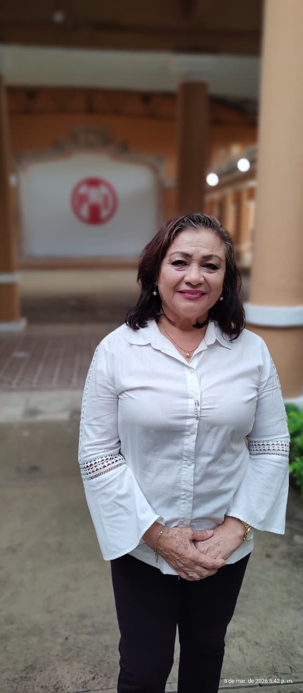
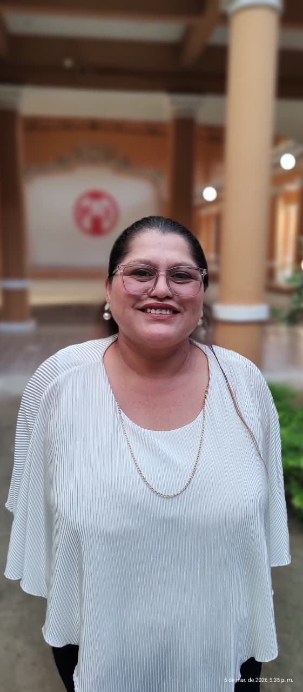
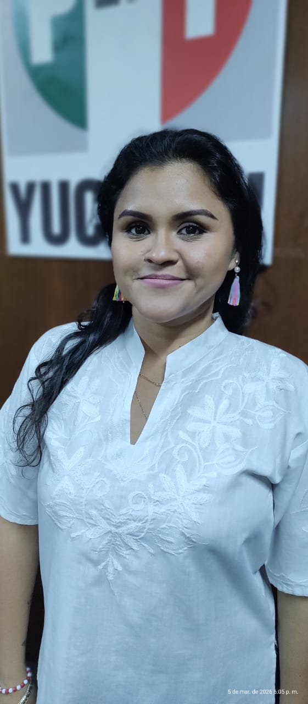

Mujeres que transforman Yucatán
El Frente Femenil CNOP es el espacio de organización, liderazgo y acción política de las mujeres populares de Yucatán. Juntas construimos comunidad, defendemos derechos y abrimos caminos.
no tiene fronteras"
Una organización hecha por mujeres para mujeres
El Frente Femenil CNOP Yucatán nació como respuesta a la necesidad de crear un espacio propio donde las mujeres populares pudieran organizarse, capacitarse y participar activamente en la vida política y social del estado.
Somos mujeres de colonias, amas de casa, profesionistas, comerciantes y trabajadoras que creemos en el poder de la organización colectiva para transformar nuestra realidad.
Trabajamos de la mano con la CNOP Yucatán para garantizar que la voz femenina esté siempre presente en la toma de decisiones que afectan a nuestra comunidad.
Próximas Actividades
Participa en nuestros eventos, talleres y jornadas diseñadas especialmente para ti.
Día Internacional de la Mujer 2026
Gran celebración del 8M con conferencias, reconocimientos a mujeres destacadas de Yucatán, actividades culturales y marcha de la solidaridad.
RegistrarmeJornada de Detección de Cáncer de Mama
Clínica CNOP · 8:00 AM
Finanzas Personales para Mujeres Emprendedoras
Oficinas CNOP · 10:00 AM
Clínica Jurídica: Pensión Alimenticia y Custodia
Casa de la Cultura · 3:00 PM
Taller: Oratoria y Comunicación Política
Auditorio CNOP · 9:00 AM
Celebración del Día de las Madres
Sede CNOP · 12:00 PM
Diseñados para ti
Iniciativas pensadas desde la experiencia de las mujeres, para responder a sus necesidades reales.
Mujeres Emprendedoras
Capacitación en negocios, acceso a microcréditos y acompañamiento para iniciar o fortalecer tu negocio propio. Más de 180 mujeres han iniciado su negocio con nuestro apoyo.
Programa estrellaAsesoría Jurídica Femenil
Orientación legal gratuita especializada en derechos de la mujer, familia, pensión alimenticia, violencia doméstica y más. Atendemos más de 200 casos al año.
GratuitoSalud Integral
Jornadas con enfoque femenil: detección oportuna de cáncer, salud reproductiva, nutrición y bienestar emocional. Una jornada mensual en distintas colonias.
MensualBecas para Mujeres
Apoyos económicos para mujeres estudiantes de preparatoria y universidad, o que deseen retomar sus estudios. Sin límite de edad.
Convocatoria abiertaEscuela de Liderazgo
Formación política y ciudadana para mujeres que quieren participar activamente en su comunidad o en cargos de representación.
AnualBienestar Emocional
Talleres de autoestima, manejo del estrés, resiliencia y círculos de apoyo facilitados por psicólogas voluntarias.
QuincenalNuestra Directiva
Mujeres comprometidas que llevan la voz del Frente Femenil con orgullo y determinación.

Rita Elena Marfil Sansoresl
Líder comunitaria con amplia trayectoria en gestión social y defensa de los derechos de la mujer en Yucatán. Coordinadora de 30+ colonias activas.

María Candelaria Delgado Aguilar
Especialista en políticas públicas con enfoque de género. Coordinadora de programas sociales comunitarios y gestión ante dependencias gubernamentales.

Mariel Casanova Aquino.
Impulsora de jornadas de salud y programas de bienestar para mujeres y familias en situación vulnerable en más de 20 colonias de Mérida.
Nuestros momentos
Capturas de nuestras actividades y la fuerza de las mujeres organizadas.
 Jornada de Salud Femenil
Jornada de Salud Femenil
 Entrega de Becas 2025
Entrega de Becas 2025
 8M · Día Internacional de la Mujer
8M · Día Internacional de la Mujer
 Taller de Emprendimiento
Taller de Emprendimiento
 Asamblea General Femenil
Asamblea General Femenil
 Taller Artesanías Henequén
Taller Artesanías Henequén
 Escuela de Liderazgo
Escuela de Liderazgo
La participación de la mujer en la política no es una concesión, es un derecho ganado con décadas de lucha y organización.
Cuando una mujer avanza, no hay hombre que retroceda.
El empoderamiento de la mujer es el empoderamiento de la comunidad entera. Juntas somos la fuerza que mueve a Yucatán.
Lo que hemos logrado juntas
Números que representan vidas transformadas en Yucatán.
Lo último del Frente Femenil
Actividades, logros y noticias de nuestras mujeres en Yucatán.
Frente Femenil celebra su aniversario con más de 200 mujeres reunidas
En el marco del 83° aniversario de la CNOP, el Frente Femenil organizó un encuentro histórico donde mujeres de más de 30 colonias de Mérida se reunieron para celebrar los logros del año y planear las acciones de 2026.
Leer másTodo lo que necesitas saber
Cualquier mujer mayor de 18 años que resida en Yucatán. No se requiere afiliación a ningún partido. Solo necesitas INE vigente, comprobante de domicilio y dos fotografías tamaño infantil.
No. La afiliación es completamente gratuita. Tampoco se cobran talleres, asesorías jurídicas ni jornadas de salud para las afiliadas.
Las becas se convocan dos veces al año (febrero y agosto). Debes estar afiliada, presentar constancia de estudios y carta de motivos. El trámite es en nuestras oficinas de lunes a viernes.
Acude directamente a nuestras oficinas de lunes a viernes de 9:00 a 17:00, o agenda por WhatsApp al (990) 393-4535. La atención es confidencial y gratuita para mujeres afiliadas.
Sí. Tenemos actividades en diferentes horarios incluyendo fines de semana. Muchos talleres también están disponibles en formato virtual.
Sí. Contamos con protocolo de atención que incluye asesoría legal, acompañamiento psicológico y canalización a las instancias correspondientes. Escríbenos por WhatsApp de inmediato.
Sé parte del cambio. Únete al Frente Femenil.
Tu voz importa. Tu participación transforma. Juntas somos más fuertes.